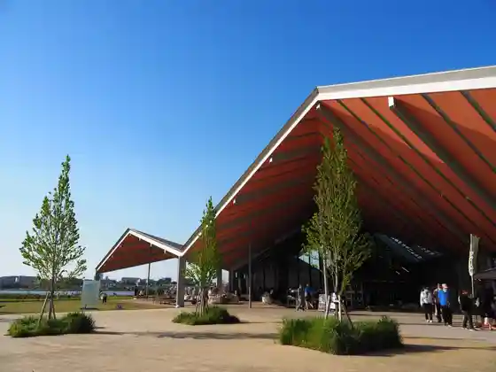
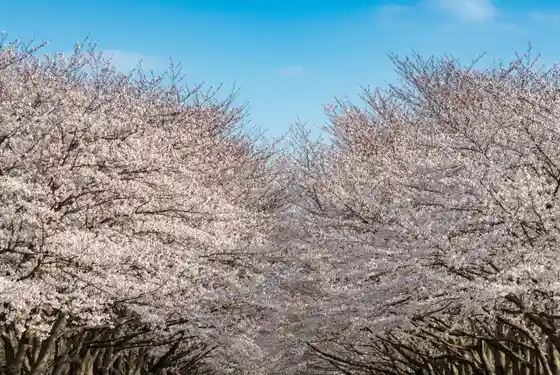
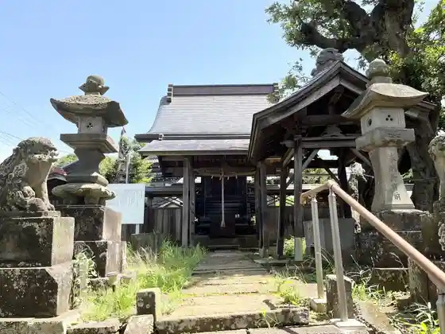

Akebo no Yama Nogyo Park
Kashiwa, Chiba · 04-7133-8877 · Official / source link
Roadside Station
Kashiwa, Chiba · 04-7190-1131 · Official / source link

Prefectural Kashiwa no Ha Park
Kashiwa, Chiba · 04-7134-2015 · Official / source link

Ryuko In Masakado Shrine
Kashiwa, Chiba · 04-7192-4194 · Official / source link

Nosambutsu Chokubai Tokoro Kashiwade
Kashiwa, Chiba · 04-7141-6755 · Official / source link
Yasai Resutoran SHONAN
Kashiwa, Chiba · 04-7196-7773 · Official / source link
Koryu Yama Fuse Benten Tokai Tera
Kashiwa, Chiba · 04-7131-7317 · Official / source link
Teganuma Fisshingu Center (Shisetsu) / Okute Ga Tsurizumu (Experience)
Kashiwa, Chiba · Official / source link
Kombukuro Ike Shizen Hakubutsu Park
Kashiwa, Chiba · 04-7132-8800 · Official / source link
Hirohata Hachiman Shrine
Kashiwa, Chiba · 04-7173-8081 · Official / source link
Kita Kashiwa Furusato Park
Kashiwa, Chiba · 04-7160-3120 · Official / source link
Kashiwa no Ha Park (Aki no Bara Sono) (Kashiwa)
Kashiwa, Chiba · 04-7134-2015 · Official / source link
Kashiwa Shonanyume Farm
Kashiwa, Chiba · 04-7160-9888 · Official / source link
JA Chiba Tokatsu Antenashoppu daichi
Kashiwa, Chiba · 04-7128-7601 · Official / source link
Kyu Tega Kyokai Do
Kashiwa, Chiba · 04-7160-9770 · Official / source link
Kyu Yoshida Ie Jutaku Rekishi Park
Kashiwa, Chiba · 04-7135-7007 · Official / source link